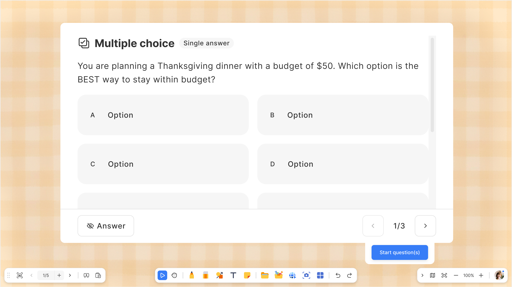

Activity Support 1-2 Quiz ClassSwift MVP
✅ 實作狀態（2026-07-03）：mVB 側（VSFT-7538）與 CS 側（VSFT-9338）皆已完成並在
Pixel Tablet 真機通過 end-to-end 回歸（batch / 單題 / 冷啟動 / 未進班 pending / 按鈕狀態 / end-and-review）。
兩支 ticket 現皆由 Jay 執行。詳見 findings。
目的：當老師切到 Quiz 課件頁時，在畫布右下角出現「開始派題」按鈕，
點擊後自動喚起 ClassSwift，並依該頁題目數自動分流（N=1 走 Single Dispatch、2 ≤ N ≤ 20 走 Batch Quiz），
派題結束後自動收合 ClassSwift 回到課件頁。
本 spec 為 Phase 1 MVP，主 spec 針對 Windows；本 repo 對應的實作為 Android (Flutter) 平台，行為與 Windows 一致但另有一份 Android spec。
本 spec 為 Phase 1 MVP，主 spec 針對 Windows；本 repo 對應的實作為 Android (Flutter) 平台，行為與 Windows 一致但另有一份 Android spec。
1. 六份原始文件
Confluence [Activity Support] 1-2 切到 Quiz 課件頁可喚起 ClassSwift 並進行一鍵派題 (MVP) — 主 spec
page_id 507642708 · space
myViewboar · v88Driver: @zoe.ay.yeh · Designer: @Hsuan Lee ·
Confluence 原頁 ·
本地 clone
Confluence Android [Activity Support] 1-2 切到 Quiz 課件頁可喚起 ClassSwift 並進行一鍵派題 (MVP)
page_id 567050261 · space
myViewboar · v2Driver: @Fred · Designer: @Hsuan Lee ·
Confluence 原頁 ·
本地 clone
Confluence [Task][Activity Support] 1-2 切到 Quiz 喚起 ClassSwift 並進行一鍵派題 (等支援 batch quiz) — 會議記錄
page_id 568492207 · space
V (URL alias clsft) · v2Confluence [Android] Phase 0 - 視窗交互行為 — Story 4-3 remark 引用（CS overlay 視窗交互／收合定義）
page_id 482148681 · space
myViewboar · v10 · clone 2026-07-10Driver: @Fred · Designer: @Hsuan Lee ·
Confluence 原頁 ·
本地 clone
※ remark 顯示文字「[Ｗindows Integration]」中的 Windows 指 CS 的 overlay 視窗（windows），非 Windows 平台。
Jira VSFT-9338 — 故事（CS 側）
Status: KICK-OFF · Assignee: Jay Wu（原 ingrid.ys.wang，2026-07-03 改） · Reporter: Fred · Created: 2026-06-30
Jira VSFT-7538 — 故事
Status: KICK-OFF · Assignee: Jay Wu · Reporter: Fred · Created: 2026-04-27
Jira 原 issue ·
本地 clone ·
含 Ingrid 的注意事項留言
2. 文件關係
| 文件 | 角色 | 指向 / 被指向 |
|---|---|---|
| Confluence 507642708 (主 spec) | Windows 平台完整 spec；User Stories、AC、Phase 分層皆源自此頁 | 被 Android spec、VSFT-9338 / VSFT-7538 引用；QA 已在 v3.4.8.435-s / v3.4.11.403-s 測過 |
| Confluence 567050261 (Android spec) | Android/Flutter 平台的 delta：AC 較簡略，聚焦 mVB Android 側行為 | 被 VSFT-9338、VSFT-7538 description 引用（SPEC: Android ...） |
| Confluence 568492207 (會議記錄) | 2026-06-30、2026-07-01 兩次會議的討論與 Task 拆解（Jay / Ingrid） | 綁定 VSFT-9338 |
| VSFT-9338 (Ingrid) | ClassSwift 側 story（Android）；由 Ingrid 執行 | SPEC 指向 Android spec；跟 VSFT-7538 為姊妹 issue（同標題） |
| VSFT-7538 (Jay) | myViewBoard 側 story（Android）；由 Jay 執行；此 repo 對應此 issue | SPEC 指向 Android spec；含 Ingrid 的協作 notes |
本次功能 Jay 端範圍（VSFT-7538 + 會議記錄）：myViewBoard 端解析原檔 → 打包 JSON → 用 AIDL 傳遞給 ClassSwift；
派題結束 / 失敗事件從 ClassSwift 回傳給 mVB；並確認圖片題與 Audio 題的檔案格式（URL vs Path）。
3. Background
Objective
- Quiz 課件頁畫布右下角新增「開始派題」按鈕，引導使用 ClassSwift 互動功能。
- 點擊後自動喚起 ClassSwift，依登入 / 班級狀態決定是否登入或選班。
- 該頁全部題目自動成為派題範圍，不需手動勾選：
- N = 1 → Single Dispatch（
create_quizsocket） - 2 ≤ N ≤ 20 → Batch Quiz（
POST /lessons/{lesson_id}/quizzes/batch_quizzes）
- N = 1 → Single Dispatch（
- 派題結束後 ClassSwift 視窗收回，老師回到 mVB 原課件頁繼續授課。
Why we need to do this
- 降低操作摩擦力：自動串接 Quiz 頁 → ClassSwift 派題，達到「隨切隨派」。
- 延伸 Activity Layer 價值：把 Activity Layer 既有題目直接當成派題素材，靜態課件轉互動資源。
- 零 regression：只走既有 Single / Batch Quiz API，不新增 endpoint、不動 ClassSwift 既有邏輯。
4. Solution Overview
主流程圖（Mermaid）
flowchart TD
A([1 開啟 OLF 檔案]):::stage --> B{切到 Quiz 課件頁?}
B -- 否 --> B1[其他課件頁
不顯示 CTA]:::note B -- 是 --> C[2 顯示「開始派題」CTA]:::stage C --> D[老師點擊「開始派題」] D --> D1[按鈕進入 loading / disabled] D1 --> D2{Parser 取得 N}:::decision D2 -- N = 1 --> D3[記錄: Single Dispatch] D2 -- 2 ≤ N ≤ 20 --> D4[記錄: Batch Quiz] D3 --> E[3 喚起 ClassSwift
OTA / token 交換 / ready]:::stage D4 --> E E -- 15s timeout --> ERR1[顯示啟動逾時
toast + 重試按鈕]:::error ERR1 --> D0[按鈕回復 enabled] E --> F{4 登入 / 班級狀態}:::decision F -- 未登入 --> F1["Windows spec: 引導登入
★ Android 實作: 未登入直接派題(guest)
不取班級列表、不進選班"]:::android F1 -- 取消 --> D0 F1 -- 成功 --> F F -- 已登入無班級 --> F2[引導建立班級] F2 -- 取消 --> D0 F2 -- 成功 --> F F -- 已登入有班級 --> G[選擇班級
Story 2-3]:::stage G --> H{Path A / Path B?
MVP 只走 Path A}:::decision H -- Path A
首次 / 學生未加入 --> I[5 join class + 派題視窗並列
join class 在最上層]:::stage H -- Path B
Phase 2 才實作 --> I2[僅派題視窗
跳過 join class]:::phase2 I --> J{派題類型}:::decision I2 --> J J -- N = 1 --> K1[Single Dispatch
create_quiz socket]:::single J -- N ≥ 2 --> K2[Batch Quiz
POST batch_quizzes]:::batch K1 --> L[學生作答
OPEN → FINISH]:::stage K2 --> L L --> M[6 REVEAL / DISCLOSED
檢討題目]:::stage M --> N1[老師點 CS 端「結束派題」] N1 --> O[7 CS 視窗收合
按鈕回復 enabled]:::stage O --> P([回到 mVB 課件頁繼續授課]):::stage classDef stage fill:#eff6ff,stroke:#2563eb,color:#1e3a8a classDef decision fill:#fef3c7,stroke:#ca8a04,color:#78350f classDef error fill:#fee2e2,stroke:#dc2626,color:#7f1d1d classDef note fill:#f3f4f6,stroke:#9ca3af,color:#374151 classDef single fill:#dcfce7,stroke:#16a34a,color:#14532d classDef batch fill:#e0e7ff,stroke:#6366f1,color:#312e81 classDef phase2 fill:#f5d0fe,stroke:#a855f7,color:#581c87,stroke-dasharray: 5 5 classDef android fill:#fff7ed,stroke:#ea580c,color:#7c2d12
不顯示 CTA]:::note B -- 是 --> C[2 顯示「開始派題」CTA]:::stage C --> D[老師點擊「開始派題」] D --> D1[按鈕進入 loading / disabled] D1 --> D2{Parser 取得 N}:::decision D2 -- N = 1 --> D3[記錄: Single Dispatch] D2 -- 2 ≤ N ≤ 20 --> D4[記錄: Batch Quiz] D3 --> E[3 喚起 ClassSwift
OTA / token 交換 / ready]:::stage D4 --> E E -- 15s timeout --> ERR1[顯示啟動逾時
toast + 重試按鈕]:::error ERR1 --> D0[按鈕回復 enabled] E --> F{4 登入 / 班級狀態}:::decision F -- 未登入 --> F1["Windows spec: 引導登入
★ Android 實作: 未登入直接派題(guest)
不取班級列表、不進選班"]:::android F1 -- 取消 --> D0 F1 -- 成功 --> F F -- 已登入無班級 --> F2[引導建立班級] F2 -- 取消 --> D0 F2 -- 成功 --> F F -- 已登入有班級 --> G[選擇班級
Story 2-3]:::stage G --> H{Path A / Path B?
MVP 只走 Path A}:::decision H -- Path A
首次 / 學生未加入 --> I[5 join class + 派題視窗並列
join class 在最上層]:::stage H -- Path B
Phase 2 才實作 --> I2[僅派題視窗
跳過 join class]:::phase2 I --> J{派題類型}:::decision I2 --> J J -- N = 1 --> K1[Single Dispatch
create_quiz socket]:::single J -- N ≥ 2 --> K2[Batch Quiz
POST batch_quizzes]:::batch K1 --> L[學生作答
OPEN → FINISH]:::stage K2 --> L L --> M[6 REVEAL / DISCLOSED
檢討題目]:::stage M --> N1[老師點 CS 端「結束派題」] N1 --> O[7 CS 視窗收合
按鈕回復 enabled]:::stage O --> P([回到 mVB 課件頁繼續授課]):::stage classDef stage fill:#eff6ff,stroke:#2563eb,color:#1e3a8a classDef decision fill:#fef3c7,stroke:#ca8a04,color:#78350f classDef error fill:#fee2e2,stroke:#dc2626,color:#7f1d1d classDef note fill:#f3f4f6,stroke:#9ca3af,color:#374151 classDef single fill:#dcfce7,stroke:#16a34a,color:#14532d classDef batch fill:#e0e7ff,stroke:#6366f1,color:#312e81 classDef phase2 fill:#f5d0fe,stroke:#a855f7,color:#581c87,stroke-dasharray: 5 5 classDef android fill:#fff7ed,stroke:#ea580c,color:#7c2d12
依 Confluence 507642708（Windows）§Solution Overview 繪製，MVP 只走 Path A；★ 橘色節點 = Android 實作與 Windows spec 不同之處
7 階段流程對應
| 階段 | 說明 | 對應 Story |
|---|---|---|
| 1 | 開啟檔案 | 前置條件 |
| 2 | Quiz 課件頁，點選「開始派題」 （派題類型決策點） | Story 1-1, 1-2 |
| 3 | 啟用 ClassSwift（含 updating loading 畫面） | Story 2-1 |
| 4 | 選擇班級（未登入 / 已登入兩分支） | Story 2-2, 2-3 |
| 5 | 學生加入並開始作答（join class + 派題視窗並列） | Story 2-4, 2-5 |
| 6 | 結束問答並 review 檢討 | Story 2-5 |
| 7 | 結束派題 → 回到簡報 | Story 4-3 |
派題類型分流（Single Dispatch vs Batch Quiz）
| 該頁題目數 N | 派題類型 | 觸發 API / Socket | 來源規則 |
|---|---|---|---|
| N = 1 | Single Dispatch | create_quiz socket | Single Quiz spec |
| 2 ≤ N ≤ 20 | Batch Quiz | POST /lessons/{lesson_id}/quizzes/batch_quizzes | Batch Quiz spec（題目 ≥ 2 且 ≤ 20） |
| N = 0 / N > 20 | — | — | Editor 會擋，App 端不會遇到 |
- 判定時機 = 階段 2 點擊當下：由 Activity Layer parser 解析 N 即決策。
- 執行時機 = 階段 5 派題視窗呈現：依 N 對應的 API 送出。
flowchart LR
START(["老師點擊「開始派題」"]) --> P["Activity Layer parser
解析該頁題目數 N"] P --> D{"N = ?"} D -->|"N = 1"| S["Single Dispatch
create_quiz socket"]:::single D -->|"2 ≤ N ≤ 20"| B["Batch Quiz
POST /lessons/:id/quizzes/batch_quizzes"]:::batch D -->|"N = 0"| X1["Editor 會擋
App 端不會遇到"]:::skip D -->|"N > 20"| X2["Editor 會擋
App 端不會遇到"]:::skip S --> R["Single Quiz UI"] B --> R2["Batch Quiz UI"] classDef single fill:#dcfce7,stroke:#16a34a,color:#14532d classDef batch fill:#e0e7ff,stroke:#6366f1,color:#312e81 classDef skip fill:#f3f4f6,stroke:#9ca3af,color:#6b7280,stroke-dasharray: 5 5
解析該頁題目數 N"] P --> D{"N = ?"} D -->|"N = 1"| S["Single Dispatch
create_quiz socket"]:::single D -->|"2 ≤ N ≤ 20"| B["Batch Quiz
POST /lessons/:id/quizzes/batch_quizzes"]:::batch D -->|"N = 0"| X1["Editor 會擋
App 端不會遇到"]:::skip D -->|"N > 20"| X2["Editor 會擋
App 端不會遇到"]:::skip S --> R["Single Quiz UI"] B --> R2["Batch Quiz UI"] classDef single fill:#dcfce7,stroke:#16a34a,color:#14532d classDef batch fill:#e0e7ff,stroke:#6366f1,color:#312e81 classDef skip fill:#f3f4f6,stroke:#9ca3af,color:#6b7280,stroke-dasharray: 5 5
派題類型分流決策（點擊當下判定，階段 5 執行）
階段 5 Path A / Path B（Phase 2 才會處理 Path B）
| 條件（全部 AND 成立 → Path B；任一不成立 → Path A） | 判斷依據 |
|---|---|
| 同份 OLF 未關閉 | OLF session lifecycle |
| 已完成選班且 lesson 未變 | ClassSwift lesson_id |
| 學生已 join 過該 lesson 或 已派過 ≥ 1 輪題目 | ClassSwift 班級 + 派題狀態 |
- Path A：首次派題 / 條件不成立 → join class + 派題視窗並列（join class 在最上層）。
- Path B：條件全部成立 → 跳過 join class，直接顯示派題視窗。
- Session 重設：OLF 關閉、CS 端切到另一 lesson → invalidate，下次回 Path A。
MVP 簡化（主 spec Refinement）：MVP 不會有 Path B 情境；不管有沒有名單都喚起 join class + 派題視窗，
完全 follow Spinner 流程。
flowchart TD
START([派題觸發]) --> C1{同份 OLF 未關閉?}:::decision
C1 -- 否 --> PA[Path A
join class + 派題視窗並列]:::pathA C1 -- 是 --> C2{已完成選班
且 lesson 未變?}:::decision C2 -- 否 --> PA C2 -- 是 --> C3{學生已 join 過該 lesson
或 已派過 ≥ 1 輪?}:::decision C3 -- 否 --> PA C3 -- 是 --> PB[Path B
跳過 join class
直接派題視窗]:::pathB PA --> RESET[Session 重設條件
OLF 關閉 / 切另一 lesson
→ invalidate，回 Path A]:::note PB --> RESET classDef decision fill:#fef3c7,stroke:#ca8a04,color:#78350f classDef pathA fill:#dbeafe,stroke:#2563eb,color:#1e3a8a classDef pathB fill:#f5d0fe,stroke:#a855f7,color:#581c87,stroke-dasharray: 5 5 classDef note fill:#f3f4f6,stroke:#9ca3af,color:#374151
join class + 派題視窗並列]:::pathA C1 -- 是 --> C2{已完成選班
且 lesson 未變?}:::decision C2 -- 否 --> PA C2 -- 是 --> C3{學生已 join 過該 lesson
或 已派過 ≥ 1 輪?}:::decision C3 -- 否 --> PA C3 -- 是 --> PB[Path B
跳過 join class
直接派題視窗]:::pathB PA --> RESET[Session 重設條件
OLF 關閉 / 切另一 lesson
→ invalidate，回 Path A]:::note PB --> RESET classDef decision fill:#fef3c7,stroke:#ca8a04,color:#78350f classDef pathA fill:#dbeafe,stroke:#2563eb,color:#1e3a8a classDef pathB fill:#f5d0fe,stroke:#a855f7,color:#581c87,stroke-dasharray: 5 5 classDef note fill:#f3f4f6,stroke:#9ca3af,color:#374151
Path A / Path B 判斷（三條件 AND；MVP 只實作 Path A，Path B 為 Phase 2 scope）
核心設計目標
- 單一入口：Quiz 課件頁固定顯示「開始派題」，與 Activity Layer 的
quiz標記綁定。 - 零手動步驟：該頁全部題目自動成為派題範圍。
- 題數感知分流：N=1 → single、N≥2 → batch，老師端體驗一致。
- 狀態感知 Path A/B：依班級啟用與學生加入狀態自動判斷（MVP 只走 Path A）。
- 沿用既有 API：Single Quiz / Batch Quiz API + 既有 socket events，不新增 endpoint。
- 跨平台一致：Windows / Flutter (Android) 行為一致。
5. User Stories & AC
Story 摘要
| Story | Phase 1 處理範圍 | 類型 |
|---|---|---|
| 1-1 — Quiz CTA | 必出現於 Quiz 課件頁，UI 簡化、答案揭示、單/多題視覺一致 | 🔴 完全新增 |
| 1-2 — 點擊觸發 | toggle 觸發、Loading、派題類型決策、流程交棒、15s timeout、失敗回復 | 🔴 完全新增 |
| 2-1 — 自動喚起 CS | mVB 呼叫 protocol handler，沿用 CS 喚起既有行為 | 🟡 主要沿用 |
| 2-2 — 登入 / 班級判斷 | mVB 端依 CS status 判斷分支 | 🟠 部分沿用 |
| 2-3 — 選擇組織 / 班級 | 完全沿用 Windows Integration Phase 1 | 🟢 完全沿用 |
| 2-4 — 派題視窗呈現（Path A） | Path A × Single + Path A × Batch | 🟠 部分沿用 |
| 2-5.A — Single Dispatch | 完全沿用 Single Quiz spec | 🟢 完全沿用 |
| 2-5.B — Batch Quiz | 完全沿用 Batch Quiz spec | 🟢 完全沿用 |
| 2-5.C — 共通邊界 | 完全沿用 socket reconnect + Phase 0 | 🟢 完全沿用 |
| 3-1 — 題型對應（4 種） | mVB 端打包邏輯 | 🟠 部分沿用 |
| 4-1 — 按鈕狀態 | 派題狀態保留 + 重派觸發 | 🔴 完全新增 |
| 4-2 — 錯誤處理 | 顯示錯誤後 abort，不做 retry | 🟠 部分沿用 |
| 4-3 — 結束派題 | 派題收合沿用 Phase 0；對話框 + 按鈕復原為新增 | 🟠 部分沿用 |
Story 1-1：App 切到 Quiz 課件頁顯示「開始派題」CTA 🔴 完全新增
As a 老師 / I want 在切換到 Quiz 課件頁時，畫布上自動出現「開始派題」按鈕 / So that 我能立即認知到這是一個可互動派題的課件
🖊️ 本機補充 AC（Jay 提出、PM Fred 已確認 2026-07-09）：
- 不支援 ClassSwift 時，Quiz 課件頁不顯示「開始派題」按鈕、且活動區維持全高
（渲染等同非 quiz 課件頁）。「不支援」= 與 main toolbar 的 ClassSwift toggle 同條件：
kClassSwiftEnabled（flavor 為 IFP/EDLA）且RegionGateService.isEnabled(quizTool)（region gate 開啟）。 - 理由：無法派題時，派題按鈕不該出現、更不該為它讓出底部 tab 高度而壓縮活動內容—— 應與一般（非 quiz）課件頁一致地鋪滿版面。
- 實作：共用判斷
isQuizDispatchSupported(context)（canvas_overlay_layer.dart）；CanvasOverlayLayer（按鈕層）不支援即早退不畫，BackgroundActivityOverlayLayer（活動/高度層）的isQuiz併入此條件 → 不支援時activityRect = layoutRect（全高、無 tab 底座）。
🎨 Figma 設計稿

按鈕視覺規格（從 Figma 量測，供 Flutter 實作對齊）
| 屬性 | 值 | Flutter 實作對應 |
|---|---|---|
| 高度 / padding | 56 / 28,14 | SizedBox(height:56) + Padding(horizontal:28) + Center(widthFactor:1)（皆 canvas 邏輯單位，由 matrix 縮放） |
| 圓角 | 9.33 | BorderRadius.circular(9.33) |
| 背景色 | #377DF7 | vsColors.actionButtonBackgroundPrimary（= accentBlue500）；disabled = accentBlue200 |
| icon | 無 | Figma icon layer visible=false、sparrow Content 只綁文字 → 不放 icon |
| 文字 | 18.67 / w500 / 白 | fontSize 18.67, FontWeight.w500 |
| 錨點 | activity 正下方、靠右 | 白色 tab 底座（固定 260×80、下圓角 16、右邊距 70）由 activity overlay 畫在內容層（可被書寫），與 WebView 連體（一體 drop shadow：union path 單一陰影，採 DS 卡片 token 黑@20%/blur16/offset(0,4)；Figma REST API 取不到 library effects，設計確有陰影）；按鈕本體（212×56）由 CanvasOverlayLayer 疊在 ink 之上的相同位置（幾何契約 QuizDispatchTabMetrics 兩層共用）→ 滿足「Inking 不遮擋按鈕」AC |
| 縮放 | 跟隨畫布 | 兩層同用 backgroundImageMatrix；chrome 層同時訂閱 notifier+movingNotifier（畫布 transform 的完整觸發集合）→ 縮放/平移/zoom-to-center 不分離 |
| busy 狀態 | 單純 disabled | 底色 #D7E5FD（accentBlue200，由 VSElevatedButton theme token 自動處理），無轉圈（對齊 Figma disabled 變體 node 40008676-38157） |
Quiz 課件頁 UI 變更
- 新增：切到 Quiz 課件頁時顯示「開始派題」CTA
- 移除：「帳號」、「編輯」、「刪除頁面」、「解析」等 CTA 不顯示（Phase 1 不提供）
- 保留：「答案」按鈕（多選 / 單選 / 是非顯示；簡答不顯示）
Acceptance Criteria
| Topic | Given / When / Then |
|---|---|
| 派題入口顯示 | 已開啟含 Quiz 課件的 OLF → 切到 Quiz 課件頁 → 顯示「開始派題」按鈕 |
| 入口可見性收斂 | 切到非 Quiz 課件頁（Phet / 純內容）→ 不顯示按鈕 |
| UI 簡化 | Quiz 課件頁的右上角工具列不顯示帳號/編輯/刪除/解析 CTA |
| 答案揭示 | 老師點擊「答案」CTA → 切換顯示正解模式（含 highlight） |
| 與圖層規格對齊 | Inking / Element 不會遮擋「開始派題」按鈕 |
| Prepare / Present Mode 一致 | Edit / Present 兩模式行為一致 |
| 單題分流 | N = 1 時視覺與多題一致；點擊走 Single Dispatch |
| 多題分流 | N > 1 時按鈕始終可見；點擊走 Batch Quiz（該頁 N 題 = 一個 batch） |
Story 1-2：點擊「開始派題」開啟 ClassSwift toggle 🔴 完全新增
As a 老師 / I want 點擊按鈕後系統能立即回饋並開啟 ClassSwift 派題流程 / So that 我能確定點擊已被接收
Acceptance Criteria（本平台實作）
| Topic | 行為 | AC 來源 |
|---|---|---|
| Toggle 觸發 | 按鈕可點 → 點擊後單純 disable（無轉圈 spinner，對齊設計稿），觸發 CS Toggle 開啟 | Android spec |
| 失敗回復 | 任一階段失敗 → 按鈕回復 enabled + toast/dialog 錯誤（4s auto-dismiss） | Android spec |
| 派題類型決策 | parser 取得 N，記錄 Single / Batch 決策，交給 Story 2-5 執行 | 參考 Windows |
| Loading 上限（15s timeout） | 喚起達 15s 仍未 ready → 顯示啟動逾時 toast + 重試按鈕；按鈕回復 enabled | 參考 Windows |
Android spec 只列 2 條（Toggle 觸發、失敗回復）；其餘標「參考 Windows」者為
Android spec 未明列、實作時參考 Windows spec (507642708) 補上：
- 派題類型決策：Android/Windows §2 分流表兩邊都有，但 Android Story 1-2 未列為 AC，故補。
- 15s timeout：Android spec 僅註「flutter 原本定義」未給數值；實作採 Windows 的 15s + 重試按鈕。
- 去除了 Windows 的「Loading 視覺規格 / 流程交棒」兩條 spinner 相關 AC — 本平台按鈕單純 disable、不轉圈（設計稿即如此），故不套用。
Story 2-1：自動喚起 ClassSwift 🟡 主要沿用
As a 老師 / I want 點擊後 mVB 能自動喚起 ClassSwift / So that 我不需要手動切換 App
- Windows：透過 protocol handler 喚起 CS（toggle 同步自動打開），等待 ready
- Android：不論是否登入，喚起 CS 時「打開 loading 視窗，完成 OTA、token 交換、等相關判斷」
Story 2-2：登入狀態與班級列表判斷 🟠 部分沿用
主 spec（合併結構）
| 分支 | 行為 |
|---|---|
| 未登入 | 引導完成 CS 登入 → 回判斷階段 |
| 已登入無班級 | 引導建立班級 → 回判斷階段 |
| 已登入有班級 | 進入 Story 2-3 選班 |
| API 失敗 | 顯示錯誤 + 重試按鈕 |
| 未登入 / 無班級取消 | 中止派題，按鈕回復 enabled |
| 承接 event | 用戶登入完成 / 建立班級完成 → CS 推送 ready event，mVB 自動繼續，不需再點 |
Android spec 拆分寫法
- 2-2.A：已登入 → 取得班級列表並選班（含 API 失敗處理）
- 2-2.B：未登入 → 不取班級列表、不進選班，直接進入派題視窗
✅ 實作已定（2026-07-03，Jay）：採 Android spec 2-2.B「未登入直接派題」。
mvbf
與 Windows spec 不同：主 spec (Windows) 未登入是「引導完成登入後再判斷」；本平台不採用。
_onDispatchQuiz 不做登入分支判斷：CS 未 ready 時 pending 派題並 ClassSwiftTurnOnEvent 喚起，
CS 以 isGuestMode guest 身分啟動即可派題（不強制登入、不取班級列表、不進選班）。
與 Windows spec 不同：主 spec (Windows) 未登入是「引導完成登入後再判斷」；本平台不採用。
Story 2-3：選擇組織 / 班級 🟢 完全沿用
完全沿用 [Windows Integration] Phase 1 的 select class / join class 流程。
Story 2-4：首次派題視窗呈現（Path A） 🟠 部分沿用
As a 老師 / I want 首次派題時系統能同時呈現 join class 視窗與派題視窗（並列）
| Topic | 行為 |
|---|---|
| Path A 觸發 | 首次派題 / 學生未加入過 → 跳出 join class + 派題視窗，join class 在最上層 |
| Path A × Single | N = 1 → join class + Single Quiz 視窗並列 |
| Path A × Batch | 2 ≤ N ≤ 20 → join class + Batch Quiz 視窗並列 |
| 視窗佈局 | join class 前景、派題視窗後景；位置由 CS 端控制 |
| Late Join 時長 | 無學生加入時 join class 視窗不自動 timeout；老師可主動關閉 |
| 加入過程不切 path | 第一位學生加入後 join class 視窗保留（不跳到 Path B） |
Android spec 差異：Join Class 視窗顯示條件依「學生清單已加入 > 1」判斷（會議記錄補充：參考 Spinner 邏輯，有學生就不顯示，反之亦然）；
Quizzing 視窗依單題 / 多題分別顯示。
Story 2-5：派題後 ClassSwift 接手 UI 與後台同步 🟢 完全沿用
- 2-5.A Single Dispatch (N = 1)：完全走 Single Quiz spec，含
create_quiz/finish_quiz/close_quiz/reveal_quiz_answers。 - 2-5.B Batch Quiz (2 ≤ N ≤ 20)：走 Batch Quiz spec，含 OPEN → FINISH → DISCLOSED lifecycle、child quiz、
batch_quizzes_created/batch_quizzes_student_submitted。 - 2-5.C 共通邊界：視窗最小化 / 前景化 / 跨 App 切換沿用 Phase 0；socket reconnect 沿用既有清單。
Story 3-1：題型對應（Phase 1 前 4 種） 🟠 部分沿用
詳見 §6 題型對應表。欄位缺漏兜底：該題標記 invalid、於該頁排除，不送 broken payload 給 CS。
Story 4-1：派題期間的按鈕狀態管理 🔴 完全新增
| Topic | 行為 | AC 來源 |
|---|---|---|
| 派題狀態保留 | Single / Batch 進行中（status = OPEN）→ 切離再切回該頁，按鈕 disabled，無法重派 | Android spec |
| 重派觸發 | Single / Batch 已 FINISH / DISCLOSED / CLOSE → 再次點擊按鈕直接進入新一輪派題 | 參考 Windows |
「重派觸發」為 Android spec 未列、參考 Windows spec (507642708 Story 4-1) 補上；Android spec Story 4-1 僅有「派題狀態保留」一條。
會議補充：只要有派題，派題按鈕就會 disable，無論是否切到下一頁。
🖊️ 本機補充（Jay 自行新增，非官方 AC — 依程式碼與實機觀察整理，待官方確認）：
- disable 是「全域、跨檔案」，不只跨頁。
程式碼
isStartQuizDispatchEnabled = quizDispatchPhase == idle && !isMissionOngoing， 其中isMissionOngoing來自 CS 的EventMissionStatus廣播、是 ClassSwiftBloc 的全域狀態， 與 mvbf 開哪個檔案/分頁無關。→ 只要有一個 ongoing 派題，任何檔案、任何頁的「開始派題」都 disabled。 官方 AC 只明寫到「跨頁」（無論切到下一頁），「跨檔」尚未寫入 AC，但為同一全域狀態的必然結果。 - 是「一次一個 ongoing 派題」，不是「一輩子只能派一題」。 batch 一次可含多題（如 11 題）；當前 mission 結束（CLOSED）後即可再派下一個。這是 CS「一堂課一次一個 mission」模型，mvbf 忠實反映（並非 mvbf 未對齊 CS）。
- Story 4-3「結束後恢復 enable」的前提是 mission 真正走到 CLOSED。
實機觀察：按「End and review question」只會公布答案 → 進 review，
送出
EventWindowStateChanged: MVB_BATCH_START_QUIZ = CLOSED但不一定送EventMissionStatus = CLOSED； 若尚有學生未作答，還會跳「End and push task」確認框，需再按確認才真正結束。 未走到 CLOSED 前，isMissionOngoing仍為 true → 按鈕不會恢復。
（2026-07-12 更新，B 修法後已改）：CS 已改為 End and review 成功時送EventMissionStatus = FINISHED，mvbf 以新增的isMissionFinished放行按鈕 → 現在 End and review 後按鈕立即恢復 enabled，不需等 CLOSED、與視窗收合無關 （PM Fred 2026-07-10 定案「結束就能重派」）。詳見 findings §12。 - （本機釐清 — Jay，2026-07-12，與 PM 討論後定調）派題進行中「手動關閉 ClassSwift toggle」=
all_hide（隱藏，非結束）→「開始派題」按鈕維持 disabled。 依 Story 2-5.C「派題中最小化/隱藏 → 狀態維持、不中斷」：關 toggle 只是把 CS 視窗藏起來， 後端 quiz 仍 OPEN、mission 仍在 → 按鈕維持 disabled 才正確（一次一個 mission）。
按鈕要恢復 enabled，應走「正確結束派題」（mission 走到 FINISHED/DISCLOSED/CLOSE，見 Story 4-1 重派觸發 / 4-3 按鈕復原），而非靠關 toggle。 CS 端要「真正結束」是按派題視窗的 [X]（跳quiz_disclose_close_confirm_title=「Close question」確認框 → CANCEL），或走 End and review。
對測試的影響：每支 7538 scenario 的 teardown 必須「好好 end 派題」（而非只關 toggle），下一輪才會是乾淨 enabled 狀態。
（過程備註：曾一度改_onTurnOff讓關 toggle 也清 mission→按鈕 enabled，但與此 hide 語意衝突，已還原。）
Story 4-2：網路與 API 失敗處理 🟠 部分沿用
| Topic | 行為 |
|---|---|
| 連線異常 | mVB ↔ CS 通訊中斷 → 顯示連線錯誤 + abort；不送 single / batch API |
| Single API 失敗 | create_quiz socket 失敗 → 顯示錯誤 + abort，不顯示派題進行中 UI |
| Batch 後端錯誤 | Batch API 5xx → 顯示伺服器忙碌 + abort |
| 異常退出處理 | mVB 異常退出後重啟 → 不主動重送；按鈕依當前派題 status 決定 |
會議補充：失敗要傳送事件給 MyViewBoard 用於顯示 error（事件傳遞由 CS → mVB）。
Story 4-3：結束派題回到簡報 🟠 部分沿用
| Topic | 行為（主 spec） |
|---|---|
| 派題收合 | Single / Batch 已 FINISH + REVEAL/DISCLOSED → 老師點 CS 端「結束派題」→ CS 視窗依 Phase 0 收合，CS Toggle 不會自動關閉 |
| 強制結束確認 | 進行中有學生未答完，老師主動結束 → 沿用 finish_quiz / close_quiz 轉 FINISH |
| 按鈕復原 | CS 視窗收合 → mVB 端接收 → 「開始派題」按鈕回復 enabled |
| 內容保留 | 回到課件頁時 Inking / Element 與派題前一致 |
| 跨頁一致 | 切到下一頁依 Activity Layer 標記顯示對應 UI |
| 學生端通知 | 學生尚未看完檢討 → 老師結束 → 學生 CS 端同步顯示「老師已結束派題」 |
Android spec 簡化：Android 只列「派題收合」與「強制結束確認」兩條，
且 Then 都是「mVB 活動頁上的開始派題按鈕由 disable 轉變成 enable」。
6. 題型對應表
| 課件題型 | quiz_type | option_list | Phase | 備註 |
|---|---|---|---|---|
| 是非題 | TRUE_FALSE | 兩個選項 + is_answer | Phase 1 ✅ | |
| 單選題 | SINGLE_SELECT | 含正解 | Phase 1 ✅ | option_type = ALPHABET |
| 多選題 | MULTIPLE_SELECT | 多個 is_answer = true | Phase 1 ✅ | option_type = ALPHABET |
| 簡答 | SHORT_ANSWER | null | Phase 1 ✅ | 無正解 |
| 投票（單） | SINGLE_POLL | 不需 is_answer | Phase 2 | 無正解 |
| 投票（多） | MULTIPLE_POLL | 不需 is_answer | Phase 2 | 無正解 |
| 錄音 | RECORD | null | Phase 2 | 無參考答案 |
會議補充（2026-07-01）：題目種類含圖片題、是非題、多選、單選、投票、聲音題、簡答；
圖片題與 Audio 題需確認檔案格式（URL vs Path），由 Jay 負責釐清。
📊 題型規範來源（調查摘要）
詳細調查（生產端角度：誰在建 quiz activity、支援哪些題型、OLF wire format）請看 🔎 題型調查報告。以下為關鍵發現：
結論：
- 唯一的 quiz activity 生產者是
african-golden-cat（CS Hub 前端 React app），Confluence spec 的 7 種題型 = HubQUIZ_TYPEenum。 - Hub UI 全部 7 種都可建立/編輯，包含
RECORD（有 i18n keyquizRecord、Collection filter 可篩、驗證規則允許儲存）。 - 消費端有兩個平台：CS Desktop（合併 5 種）、CS Android（granular 8 種）。
- Hub ↔ CS Android 命名 100% 對齊，mvbf pass-through 沒有 mapping 問題。
| 題型 | 🏭 Hub 生產african-golden-cat |
🖥️ CS Desktopmaine-coon-cat |
📱 CS Androidragdoll-cat |
Phase |
|---|---|---|---|---|
| 是非 | TRUE_FALSE | TRUE_FALSE | TRUE_FALSE | 1 |
| 單選 | SINGLE_SELECT | MULTIPLE_CHOICE（合併） | SINGLE_SELECT | 1 |
| 多選 | MULTIPLE_SELECT | MULTIPLE_SELECT | 1 | |
| 簡答 | SHORT_ANSWER | SHORT_ANSWER | SHORT_ANSWER | 1 |
| 投票（單） | SINGLE_POLL | POLL（合併） | SINGLE_POLL | 2 |
| 投票（多） | MULTIPLE_POLL | MULTIPLE_POLL | 2 | |
| 錄音 | RECORD | RECORD | RECORD | 2 |
| 手寫回答 | — | — | SKETCH_RESPONSE Android 獨有 | — |
詳細調查（各檔案路徑 line number、Hub UI 證據、CS 兩端 enum 完整定義）看 🔎 題型調查報告。
OLF wire format 精確字串（
african-golden-cat/src/libs/olfViewer/types/viewModel.types.ts:52-56）：
quiz 頁的 activity category 值為 Activity_HTML_QUIZ（不是簡單的 "quiz"）；
同層的兄弟類別為 Activity_PHET、Activity_GAME。mvbf 判斷 quiz 頁時要用完整字串比對。
對 mvbf 實作的關鍵意涵：
- mvbf 是 pass-through：把 Hub 產出的 activity JSON 原封 forward 給 CS Android，不要在 mvbf 端改名或合併題型。
- Hub 命名與 CS Android 完全對齊（連
SINGLE_POLL/MULTIPLE_POLL/RECORD都同名）— 沒有 mapping 問題。 - 對 quiz 頁的判斷用
category === "Activity_HTML_QUIZ"。 - 圖片是任何題型都可帶的
img_url（存 URL）；不是獨立quiz_type。 - CS Desktop 的合併對映與 mvbf 無關 — 那是 Desktop 內部的事。
- Phase 1 只需支援前 4 種（
TRUE_FALSE/SINGLE_SELECT/MULTIPLE_SELECT/SHORT_ANSWER），其他標 invalid 排除。 SKETCH_RESPONSEHub 不會產出，mvbf 視為「不會遇到」；若真的遇到就標 invalid。
OLF spec（
edu-vboard-olfspec §4.2.2.2）補充：
每一頁最多一個 activity-layer，但一個 quiz activity 內部可以放混合題型（Confluence Story 3-1「混合題型」AC 已 Pass）。
也就是說 「Hub 建立一頁多題、多題內含多種題型」是明確支援的情境。
7. Android 版本 spec 差異
| 面向 | 主 spec (Windows, 507642708) | Android spec (567050261) |
|---|---|---|
| Driver | @zoe.ay.yeh | @Fred |
| 版本狀態 | v88，多數 AC 已 Pass（v3.4.8.435-s / v3.4.11.403-s） | v2，尚未有 QA 結果 |
| Refinement 補充 | Define MVP Scope；MVP 不會有 Path B；完全 follow Spinner 流程 | 無 |
| 1-2 Loading 15s / toast 4s | 明列 | 「flutter 原本定義」（未明列） |
| 2-2 未登入分支 | 引導登入 → 回判斷 | 不取班級列表，直接派題 |
| 2-4 Join Class 顯示條件 | Path A 固定 join class + 派題視窗 | Join Class 依「已加入學生 > 1」判斷 |
| Story 2-3 / 2-5 / 3-1 | 完整章節 | Android spec 未列出（沿用主 spec） |
| 4-3 按鈕復原 | 詳列 CS 視窗收合、Toggle 不自動關等 6 條 | 只列「按鈕由 disable → enable」2 條 |
建議：Android spec 是主 spec 的濃縮 delta；實作時遇到 AC 未明列的情境（loading timeout 秒數、
未登入行為分支、Story 2-5 lifecycle 細節），以主 spec 為準，同時與 Ingrid 對齊 CS 側行為。
8. 會議記錄與 Task 拆解
2026-06-30 會議
注意事項
- 是否要跳起 Join Class 視窗參考 Spinner 邏輯（有學生就不顯示，反之亦然）
- 只要有派題，派題按鈕就 disable（無論是否切到下一頁）
- 題目數量由 ClassSwift 判斷；送派題 API 無論單題 / 多題都用過去相同 API
待討論項目
- 單題 / 多題派題的 data 串接：mVB team 解析原檔格式 → 把 HTML 中的 JSON 丟給 CS 解析
- 派題結束後要送事件給 mVB
- 失敗要送事件給 mVB 顯示 error
2026-07-01 會議
事前準備
- OLF 檔案
- CS 的單題與多題流程結果（題目種類：圖片題、是非題、多選、單選、投票、聲音題、簡答）
Task 拆解
拆解更新（2026-07-03）：原會議把 mVB 側（VSFT-7538）與 CS 側（VSFT-9338）分給 Jay / Ingrid，
現在兩張 ticket 皆由 Jay 執行。下方仍依「mVB 側 / CS 側」呈現，但同一人負責兩端。
實作與真機驗證狀態見 findings。
mVB 側（VSFT-7538 · Jay）
- 解析原檔格式 → 打包 JSON → 用 AIDL 傳給 CS ✅ 完成
- 派題結束事件回傳 mVB（複用
EventMissionStatus）✅ - 失敗事件回傳 mVB（
EventCommandResult+ 15s timeout → toast）✅ - 圖片題檔案格式：URL（
img_url= S3 URL）✅ 已釐清 - Audio 題檔案格式：樣本無 audio；待有樣本再確認 待補
CS 側（VSFT-9338 · Jay）
- 收到 JSON（
MessageDispatchQuiz）→ 未進班 pending → 單/多題分流派題 ✅ - 傳送派題結束資訊給 mVB（
EventMissionStatusCLOSED）✅ - 傳送失敗資訊給 mVB（
EventCommandResultfailed）✅ - 圖片題正確顯示（
collection_id=nullFK 修正後 batch/summary 正常）✅ - Audio 題檔案格式 待補
9. Scope / Phase 分層
| Phase 1（MVP） | Phase 2（留存體驗） | Phase 3（市場擴張） | |
|---|---|---|---|
| 核心目標 | Windows 跑通 Quiz 課件頁 → CTA → CS 派題 → 學生作答 → 揭示 → 結束回 mVB 完整 happy path | 連續使用與異常處境：反覆派題、網路抖動、跨頁切換、長時間 Late Join 不掉鏈 | 擴大題型與平台覆蓋（更多裝置） |
| 範圍 |
|
|
|
| 成功驗證 | 4 週內出可用版本，種子學校試用，測量老師從 Quiz 頁直接派題的真實使用率 | 連續派題完成率、Late Join 成功率、retry 觸發率 | 新題型使用分布、Android 安裝與留存、跨裝置同步成功率 |
注意：主 spec 定義 Android Flutter 平台屬 Phase 3，但實際上目前
已由 VSFT-7538 / VSFT-9338 兩支 Android 側 Jira 開跑，並有獨立的 Android spec（v2）。
即 Phase 分層是主 spec 的 Windows 視角；Android 版本實作已同步啟動。
10. Jira 對照
| Issue | Summary | Assignee | Status | Created |
|---|---|---|---|---|
| VSFT-9338 | [Activity Support] 1-2 切到 Quiz 喚起 ClassSwift 並進行一鍵派題 (等支援 batch quiz) | Jay Wu 改由 Jay | KICK-OFF | 2026-06-30 |
| VSFT-7538 | [Activity Support] 1-2 切到 Quiz 喚起 ClassSwift 並進行一鍵派題 (等支援 batch quiz) | Jay Wu | KICK-OFF | 2026-04-27 |
- 兩支 issue 標題相同、都指向同一份 Android spec（page 567050261）。
- VSFT-7538 代表 myViewBoard 側（mvbf / edu-droid-flutter）；VSFT-9338 代表 ClassSwift 側（CS Android / ragdoll-cat）。
- 2026-07-03 更新：兩支 issue 皆由 Jay 執行（原 VSFT-9338 為 Ingrid）；即同一人同時負責 mVB 與 CS 兩端。
- 兩端實作已完成並真機驗證，狀態與 AC 對照見 findings。